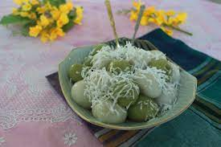

Mote Lone Yay Paw

Description
This is the burmese traditional dessert that the burmese people normally eat during the festival period called Thingyan. In burmese, we call it 'Mote lone yay paw'. Its literal meaning would be 'floated snack ball'. Sweet sticky-rice-ball might be the appropriate name to call it in English.
As its name implies, it's chewy and munchy. The sweet juice oozes out when you bite it in half. With coconut flakes sprinkled on it, it tastes heavenly. Highly recommended!
Ingredients
- Sticky rice powder
- Jaggery
- Coconut flakes (optional)
Steps
- Mix the sticky rice powder with appropriate amount of water (Make sure the paste is thick and not watery). Make a little ball on your palm and dig a shallow hole in the middle. Fill a piece of jaggery inside the ball.
- Boil the water in a large pot.
- Gently put the balls into the boiling water and wait for a moment until they get floated on the water surface. Scoop them up with a strainer. Get them in a bowl of cool water.
- Strain the water and it's ready to serve. To make it more delectable and presentable, sprinkle some coconut flakes onto them.